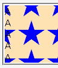

固定配置（background-attachment: fixed;）した背景画像が、ページを表示させた段階で表示されている部分しか表示されない。そのため、ページをスクロールすると背景画像が消えてしまう。
<div style="background-attachment: fixed; background-image: url(../img/img01.png);"> A<br>A<br>A<br>……</div>
ウィンドウの高さを大きくするか、フルスクリーンモードに切り替えるなどしてページ上端から例示のdiv要素までを見ることができる状態でページを表示させてからスクロールしてみてください。
下方向にスクロールした後の状態です。
Moz1.0.1での表示
Opera6.05での表示
Opera6.05では不具合の発生が確認されました。Opera7.0では標準・互換モードともに不具合の発生は確認されませんでした。